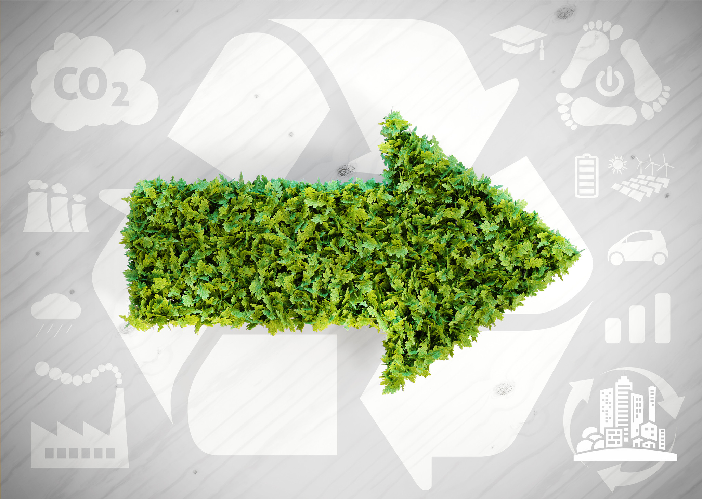
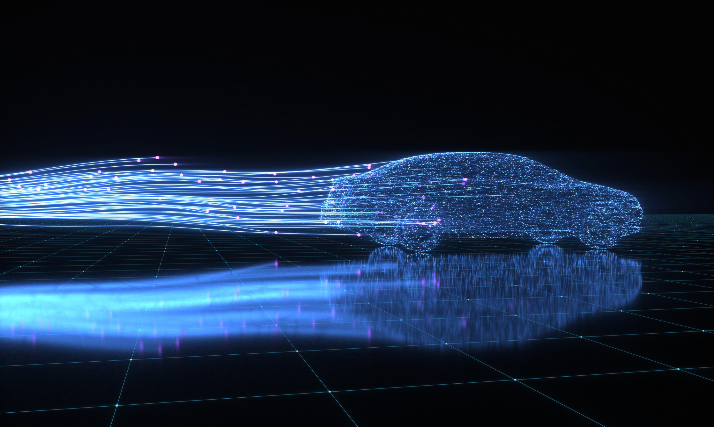
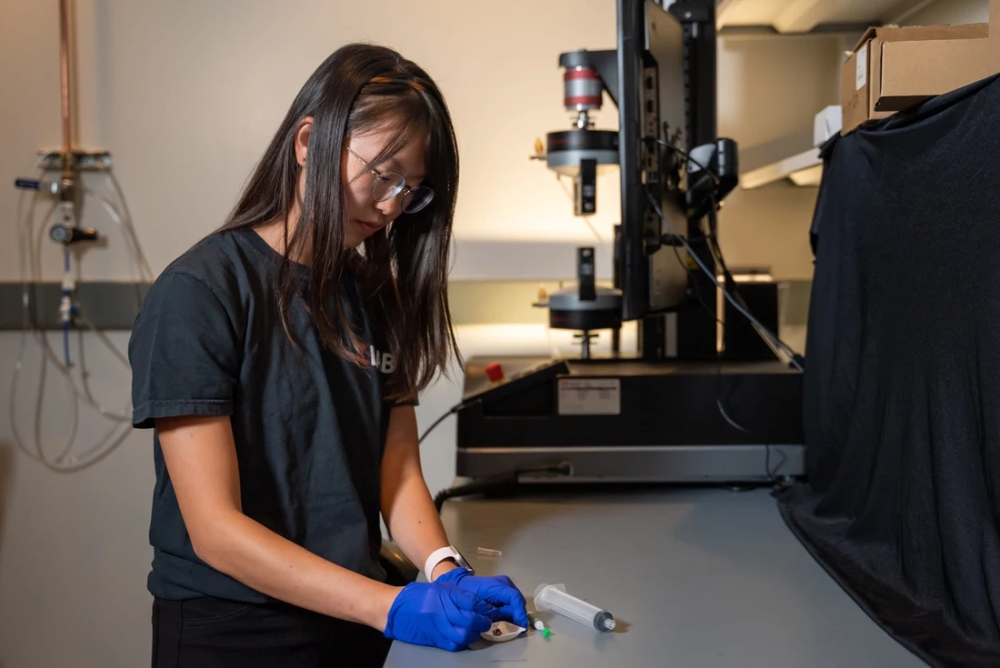
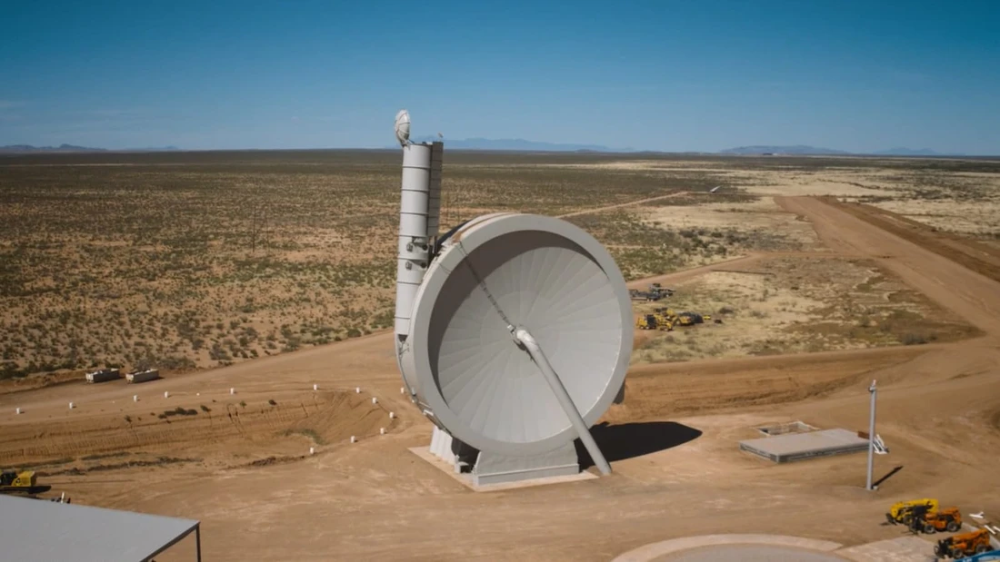
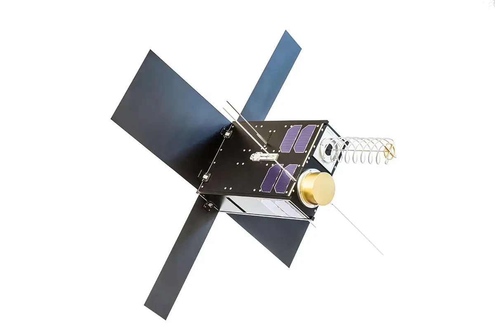

Top New Technology Trends:

1.Computing Power
Computing power is the number of computing resources that a computer can use to perform operations. This includes the number of processors, the amount of memory, and the speed of the processors. The power of a computer determines how fast it can perform operations and how many operations it can perform at the same time.It is important because it determines how well a computer can perform tasks. The more power a computer has, the faster it can perform operations and the more operations it can perform at the same time. This is why computers with more computing efficiency are often more expensive than those with less power.

2.Smarter Devices
A smart device, as the name suggests, is an electronic gadget that is able to connect, share and interact with its user and other smart devices. Although usually small in size, smart devices typically have the computing power of a few gigabytes.They are interactive electronic gadgets that understand simple commands sent by users and help in daily activities. Some of the most commonly used smart devices are smartphones, tablets, phablets, smartwatches, smart glasses and other personal electronics.While many smart devices are small, portable personal electronics, they are in fact defined by their ability to connect to a network to share and interact remotely.
3.Datafication
Datafication is a technological trend swifting many aspects of our life’s actions, moments, and works into data with the help of technologies like Artificial Intelligence, Machine Learning, Robotics, and many other emerging stacks.The crucial context of datafication is to enable better decision-making, effective understanding of analytics, efficient utilization of resources and achieving maximum growth.Its application is vital for many institutions, firms, businesses, and industries. Indeed, IT professionals require datafication to a great extent.Datafication is in trend now and practicing it makes it more illustrious. This emerging technology trend helps businesses improve their services, products, and management.
4.Artificial Intelligence and Machine Learning
Machine learning is a subfield of artificial intelligence, which is broadly defined as the capability of a machine to imitate intelligent human behavior. Artificial intelligence systems are used to perform complex tasks in a way that is similar to how humans solve problems.Machine learning is behind chatbots and predictive text, language translation apps, the shows Netflix suggests to you, and how your social media feeds are presented. It powers autonomous vehicles and machines that can diagnose medical conditions based on images. When companies today deploy artificial intelligence programs, they are most likely using machine learning — so much so that the terms are often used interchangeably, and sometimes ambiguously.
5.Extended Reality
Helping all of this become true are technologies like virtual reality (VR), augmented reality (AR) and Mixed Reality (MR), the combination of which is better known as Extended Reality (XR). Nowadays, these technologies are becoming almost indispensable to anyone seeking to better their digital experiences.The meaning behind extended reality - and what does the technology stand for. Extended reality (or XR) is an umbrella term for computer-generated environments that merge the physical and virtual worlds or create an entirely virtual experience for users. XR lies at the intersection of three technologies: virtual reality (VR), augmented reality (AR) and mixed reality (MR).
6.3D Printing
3D printing uses computer-aided design to create three-dimensional objects through a layering method. Sometimes referred to as additive manufacturing, 3D printing involves layering materials, like plastics, composites or bio-materials to create objects that range in shape, size, rigidity and color. 3D printing is a process that uses computer-aided design, or CAD, to create objects layer by layer. 3D printing is commonly used in manufacturing and automotive industries, where tools and parts are made using 3D printers. As the capabilities of 3D printing continue to grow, so does its value: By 2029, the 3D printing industry is estimated to reach a value of $84 billion.
7.Cyber Security
Cybersecurity is the practice of protecting systems, networks, and programs from digital attacks. These cyberattacks are usually aimed at accessing, changing, or destroying sensitive information; extorting money from users via ransomware; or interrupting normal business processes.Implementing effective cybersecurity measures is particularly challenging today because there are more devices than people, and attackers are becoming more innovative.
Predictions of Technology
-
1. AI-optimized manufacturing
Paper and pencil tracking, luck, significant global travel and opaque supply chains are part of today’s status quo, resulting in large amounts of wasted energy, materials and time. Accelerated in part by the long-term shutdown of international and regional travel by COVID-19, companies that design and build products will rapidly adopt cloud-based technologies to aggregate, intelligently transform, and contextually present product and process data from manufacturing lines throughout their supply chains. By 2025, this ubiquitous stream of data and the intelligent algorithms crunching it will enable manufacturing lines to continuously optimize towards higher levels of output and product quality – reducing overall waste in manufacturing by up to 50%. As a result, we will enjoy higher quality products, produced faster, at lower cost to our pocketbooks and the environment.
-
2. A far-reaching energy transformation
In 2025, carbon footprints will be viewed as socially unacceptable, much like drink driving is today. The COVID-19 pandemic will have focused the public’s attention on the need to take action to deal with threats to our way of life, our health and our future. Public attention will drive government policy and behavioural changes, with carbon footprints becoming a subject of worldwide scrutiny. Individuals, companies and countries will seek the quickest and most affordable ways to achieve net-zero – the elimination of their carbon footprint. The creation of a sustainable, net-zero future will be built through a far-reaching energy transformation that significantly reduces the world’s carbon emissions, and through the emergence of a massive carbon management industry that captures, utilizes and eliminates carbon dioxide.
-
3. A new era of computing
By 2025, quantum computing will have outgrown its infancy, and a first generation of commercial devices will be able tackle meaningful, real-world problems. One major application of this new kind of computer will be the simulation of complex chemical reactions, a powerful tool that opens up new avenues in drug development. Quantum chemistry calculations will also aid the design of novel materials with desired properties, for instance better catalysts for the automotive industry that curb emissions and help fight climate change. Right now, the development of pharmaceuticals and performance materials relies massively on trial and error, which means it is an iterative, time-consuming and terribly expensive process. Quantum computers may soon be able to change this. They will significantly shorten product development cycles and reduce the costs for R&D.
-
4.Healthcare paradigm shift to prevention through diet
By 2025, healthcare systems will adopt more preventative health approaches based on the developing science behind the health benefits of plant-rich, nutrient-dense diets. This trend will be enabled by AI-powered and systems biology-based technology that exponentially grows our knowledge of the role of specific dietary phytonutrients in specific human health and functional outcomes. After the pandemic of 2020, consumers will be more aware of the importance of their underlying health and will increasingly demand healthier food to help support their natural defences. Armed with a much deeper understanding of nutrition, the global food industry can respond by offering a broader range of product options to support optimal health outcomes. The healthcare industry can respond by promoting earth’s plant intelligence for more resilient lives and to incentivize people to take care of themselves in an effort to reduce unsustainable costs.
-
5.5G will enhance the global economy and save lives
Overnight, we’ve experienced a sharp increase in delivery services with a need for “day-of” goods from providers like Amazon and Instacart - but it has been limited. With 5G networks in place, tied directly into autonomous bots, goods would be delivered safely within hours. Wifi can’t scale to meet higher capacity demands. Sheltering-in-place has moved businesses and classrooms to video conferencing, highlighting poor-quality networks. Low latency 5G networks would resolve this lack of network reliability and even allow for more high-capacity services like telehealth, telesurgery and ER services. Businesses can offset the high cost of mobility with economy-boosting activities including smart factories, real-time monitoring, and content-intensive, real-time edge-compute services. 5G private networks make this possible and changes the mobile services economy.
Innovative Technological Ideas For The Future
1.Necrobotics
This is one way to describe the idea of necrobotics which, as the name suggests, involves turning dead things into robots. While this sounds like a plot to a creepy horror film, this is a technology being explored at Rice University. A team of researchers turned a dead spider into a robot-like gripper, given the ability to pick up other objects. To achieve this, they take a spider and inject it with air. This works because spiders use hydraulics to force their version of blood (haemolymph) into their limbs, making them extend.Right now this concept is in its infant stages, but it could mean a future where dead animals are used to further science.
2.Sand batteries
Not every technology bettering our future has to be complicated, some are simple, yet extremely effective. One of these kind of technologies has come from some Finnish engineers who have found a way to turn sand into a giant battery. These engineers piled 100 tons of sand into a 4 x 7 metre steel container. All of this sand was then heated up using wind and solar energy. This heat can then be distributed by a local energy company to provide warmth to buildings in nearby areas. Energy can be stored this way for long periods of time. All of this occurs through a concept known as resistive heating. This is where a material is heated by the friction of electrical currents.
3.Catapulting satellites into space
Who would have thought the best way to get satellites into space was with a makeshift catapult! Okay, it is a lot smarter than a catapult but the technology exists in a similar way. SpinLaunch is a prototype system for getting satellites or other payloads up into space. It does this by using kinetic energy instead of the usual technique of using chemical fuel found in traditional rockets. This technology could be capable of spinning payloads at 8,000km/h and 10,000G, then launching them skyward through a large launch tube. Of course, small rocket engines will still be required for payloads to reach orbit, but SpinLaunch has claimed this system cuts down on the fuel and infrastructure by an impressive 70 per cent. The company has signed an agreement with NASA and is now testing the system.
4.Internet for everyone
There are many reasons for this, including economic and social reasons, but for some the internet just isn’t accessible because they have no connection. Google is slowly trying to solve the problem using helium balloons to beam the internet to inaccessible areas, while Facebook has abandoned plans to do the same using drones, which means companies like Hiber are stealing a march. They have taken a different approach by launching their own network of shoebox-sized microsatellites into low Earth orbit, which wake up a modem plugged into your computer or device when it flies over and delivers your data. Their satellites orbit the Earth 16 times a day and are already being used by organisations like The British Antarctic Survey to provide internet access to very extreme of our planet.
5.AI image-generation
As artificial intelligence continues to perform jobs just as well as humans, there is a new industry to add to the list – the world of art. Researchers at the company OpenAI have created a software that is able to create images from just worded prompts. Type in ‘a dog wearing a cowboy hat singing in the rain’ and you’ll get a host of completely original images that fit that description. You can even choose what style of art your request will come back in. However, the technology isn't perfected and still has issues, like when we gave it poor prompts on designing cartoon characters. This technology known as Dall-E is now its second iteration and the team behind it plans to continue developing it further.There is also technology known as Midjourney, a AI image generator that creates gothic masterpieces with a simple text prompt.
Recent Science Break throughs
1.Decarbonization Rises
A century since scientists proposed that excess carbon dioxide in earth’s atmosphere would cause it to retain heat and cause planetary warming, a global effort is underway to drive decarbonization in all aspects of daily life. Governments and industries have made seminal commitments to reduce carbon emissions. Meeting those commitments will, over the next three to five years, demand unprecedented innovation and scaling to industrial levels of nascent technologies such as: mass energy storage, low/no carbon chemical sources, revitalized rail transport, carbon sequestration, low carbon agriculture, zero emission vehicles and power sources, as well as agreed-upon compliance monitoring on a global scale.
2.Crops that make their own fertilizer
Today the world uses more than 110 million tons of nitrogen fertilizer to enhance crop production annually. What if crops could capture nitrogen on their own, "fixing" it to themselves in the form of ammonia as legumes such as soy and beans do? Being one of the top emerging technologies, researchers now aim to coax other crops such as corn and other cereals to also self-fertilize. In one approach, researchers are working to emulate the symbiotic molecular communication between legumes and bacteria to create root nodules—legumes’ natural fertilizer factories. In another, soil bacteria that normally colonize cereal roots (but don’t normally create nodules) are taught to produce nitrogenase, a key component that converts atmospheric nitrogen to plant-compatible ammonia.
3.Diagnosing diseases with a puff of breath
Soon, testing for disease could be as simple for patients as exhaling. New breath sensors can diagnose diseases by sampling the concentrations of the more than 800 compounds contained in human breath. For instance, elevated amounts of acetone in human breath indicate diabetes mellitus. The sensors look for changes in electrical resistance as breath compounds flow over a metal-oxide semiconductor. Algorithms then analyze the sensor data. While this emerging technology needs refinements before it can become widespread, in a March 2020 study in Wuhan, China, sensors achieved a remarkable 95 percent accuracy in COVID-19 detection and 100% sensitivity in differentiating patients.
4.Making pharmaceuticals on demand
Medicines today are generally made in large batches, in a multi-step process with different parts dispersed in locations around the world. It can take months to complete the process, involving hundreds of tons of material, which creates some challenges in consistency and reliable supply. Advances in microfluidics and on-demand drug manufacturing now enable a small but increasing number of common pharmaceuticals to be made as needed. Also called continuous-flow manufacture, the process moves ingredients via tubes into small reaction chambers. The drugs can be made in portable machines in remote locations or field hospitals, with doses tailored to individual patients, a remaining challenge is reducing the high cost of this emerging technology.
5.Space connects the globe
Sensors in the Internet of Things (IoT) can record and report vital information about weather, soil conditions, moisture levels, crop health, social activities, and countless other valuable data sets. With the recent advent of countless low-cost microsatellites in low earth orbit able to capture such data globally and download it to central facilities for processing, the IoT will enable unprecedented levels of global understanding—encompassing previously inaccessible developing regions devoid of traditional Internet infrastructure. Challenges such as lower-power secure data links and the issue of short-lived low earth orbit satellites remain, but steady progress promises global deployment in the coming three to five years.
About Me